DQN variants (Rainbow)
Double DQN
In DQN, the experience replay memory and the target network were decisive in allowing the CNN to learn the tasks through RL. Their drawback is that they drastically slow down learning and increase the sample complexity. Additionally, DQN has stability issues: the same network may not converge the same way in different runs. One first improvement on DQN was proposed by @vanHasselt2015 and called double DQN.
The idea is that the target value \(y = r(s, a, s') + \gamma \, \max_{a'} Q_{\theta'}(s', a')\) is frequently over-estimating the true return because of the maximum operator. Especially at the beginning of learning when Q-values are far from being correct, if an action is over-estimated (\(Q_{\theta'}(s', a)\) is higher that its true value) and selected by the target network as the next greedy action, the learned Q-value \(Q_{\theta}(s, a)\) will also become over-estimated, what will propagate to all previous actions on the long-term. @vanHasselt2010 showed that this over-estimation is inevitable in regular Q-learning and proposed double learning.
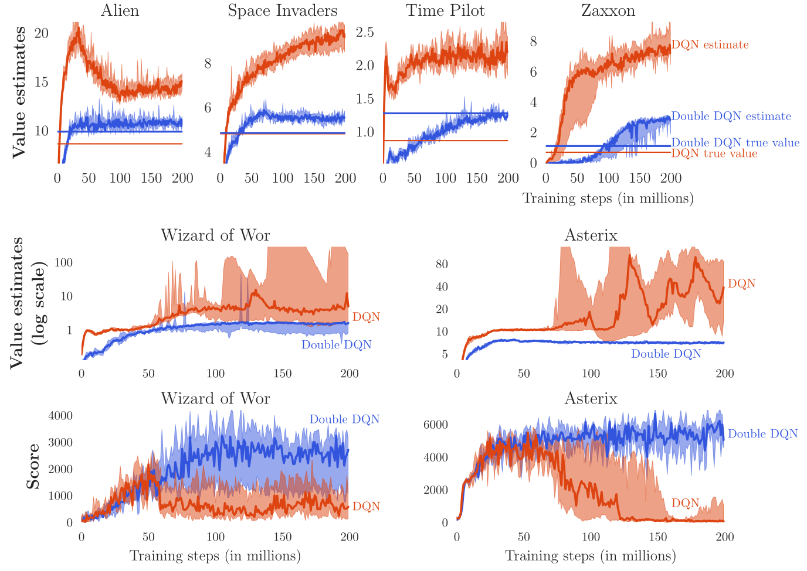
The idea is to train independently two value networks: one will be used to find the greedy action (the action with the maximal Q-value), the other to estimate the Q-value itself. Even if the first network choose an over-estimated action as the greedy action, the other might provide a less over-estimated value for it, solving the problem.
Applying double learning to DQN is particularly straightforward: there are already two value networks, the trained network and the target network. Instead of using the target network to both select the greedy action in the next state and estimate its Q-value, here the trained network \(\theta\) is used to select the greedy action \(a^* = \text{argmax}_{a'} Q_\theta (s', a')\) while the target network only estimates its Q-value. The target value becomes:
\[ y = r(s, a, s') + \gamma \, Q_{\theta'}(s', \text{argmax}_{a'} Q_\theta (s', a')) \]
This induces only a small modification of the DQN algorithm and significantly improves its performance and stability:
Prioritized experience replay
Another drawback of the original DQN is that the experience replay memory is sampled uniformly. Novel and interesting transitions are selected with the same probability as old well-predicted transitions, what slows down learning. The main idea of prioritized experience replay [@Schaul2015] is to order the transitions in the experience replay memory in decreasing order of their TD error:
\[ \delta = r(s, a, s') + \gamma \, Q_{\theta'}(s', \text{argmax}_{a'} Q_\theta (s', a')) - Q_\theta(s, a) \]
and sample with a higher probability those surprising transitions to form a minibatch:
\[ P(k) = \frac{(|\delta_k| + \epsilon)^\alpha}{\sum_k (|\delta_k| + \epsilon)^\alpha} \]
However, non-surprising transitions might become relevant again after enough training, as the \(Q_\theta(s, a)\) change, so prioritized replay has a softmax function over the TD error to ensure “exploration” of memorized transitions. This data structure has of course a non-negligible computational cost, but accelerates learning so much that it is worth it. See https://jaromiru.com/2016/11/07/lets-make-a-dqn-double-learning-and-prioritized-experience-replay/ for a presentation of double DQN with prioritized replay.
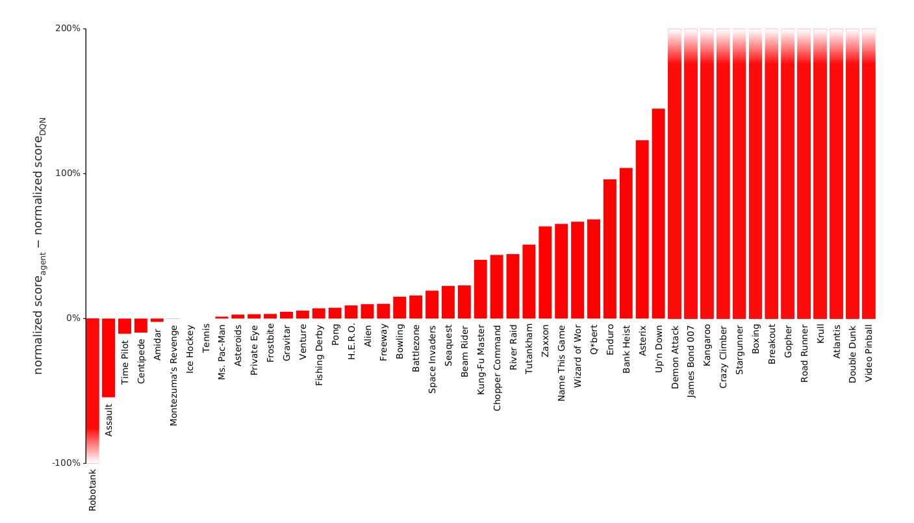
Duelling network
The classical DQN architecture uses a single NN to predict directly the value of all possible actions \(Q_\theta(s, a)\). The value of an action depends on two factors:
- the value of the underlying state \(s\): in some states, all actions are bad, you lose whatever you do.
- the interest of that action: some actions are better than others for a given state.
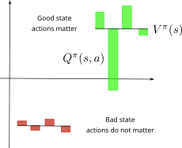
However, the exact Q-values of all actions are not equally important.
- In bad states (low \(V^\pi(s)\)), you can do whatever you want, you will lose.
- In neutral states, you can do whatever you want, nothing happens.
- In good states (high \(V^\pi(s)\)), you need to select the right action to get rewards, otherwise you lose.
The total variance of the Q-values (over all states) is quite high: it can be a problem for the underlying neural network, which has to output very negative and very positive number.
This leads to the definition of the advantage \(A^\pi(s,a)\) of an action:
\[ A^\pi(s, a) = Q^\pi(s, a) - V^\pi(s) \tag{1}\]
The advantage of the optimal action in \(s\) is equal to zero: the expected return in \(s\) is the same as the expected return when being in \(s\) and taking \(a\), as the optimal policy will choose \(a\) in \(s\) anyway. The advantage of all other actions is negative: they bring less reward than the optimal action (by definition), so they are less advantageous. Note that this is only true if your estimate of \(V^\pi(s)\) is correct.
@Baird1993 has shown that it is advantageous to decompose the Q-value of an action into the value of the state and the advantage of the action (advantage updating):
\[ Q^\pi(s, a) = V^\pi(s) + A^\pi(s, a) \]
If you already know that the value of a state is very low, you do not need to bother exploring and learning the value of all actions in that state, they will not bring much. Moreover, the advantage function has less variance than the Q-values, which is a very good property when using neural networks for function approximation. The variance of the Q-values comes from the fact that they are estimated based on other estimates, which themselves evolve during learning (non-stationarity of the targets) and can drastically change during exploration (stochastic policies). The advantages only track the relative change of the value of an action compared to its state, what is going to be much more stable over time.
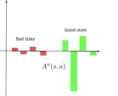
The range of values taken by the advantages is also much smaller than the Q-values. Let’s suppose we have two states with values -10 and 10, and two actions with advantages 0 and -1 (it does not matter which one). The Q-values will vary between -11 (the worst action in the worst state) and 10 (the best action in the best state), while the advantage only varies between -1 and 0. It is therefore going to be much easier for a neural network to learn the advantages than the Q-values, which are theoretically not bounded.
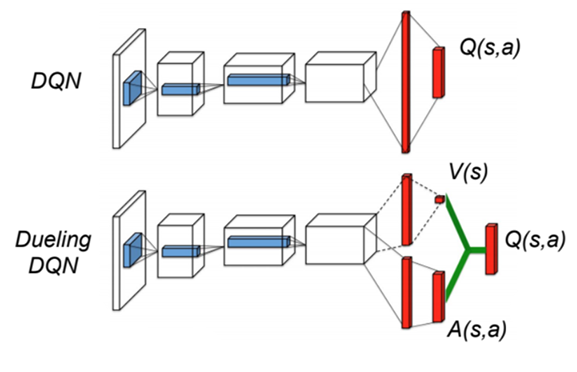
@Wang2016 incorporated the idea of advantage updating in a double DQN architecture with prioritized replay (Figure 5). As in DQN, the last layer represents the Q-values of the possible actions and has to minimize the mse loss:
\[ \mathcal{L}(\theta) = \mathbb{E}_\pi([r(s, a, s') + \gamma \, Q_{\theta', \alpha', \beta'}(s', \text{argmax}_{a'} Q_{\theta, \alpha, \beta} (s', a')) - Q_{\theta, \alpha, \beta}(s, a)]^2) \]
The difference is that the previous fully-connected layer is forced to represent the value of the input state \(V_{\theta, \beta}(s)\) and the advantage of each action \(A_{\theta, \alpha}(s, a)\) separately. There are two separate sets of weights in the network, \(\alpha\) and \(\beta\), to predict these two values, sharing representations from the early convolutional layers through weights \(\theta\). The output layer performs simply a parameter-less summation of both sub-networks:
\[ Q_{\theta, \alpha, \beta}(s, a) = V_{\theta, \beta}(s) + A_{\theta, \alpha}(s, a) \]
The issue with this formulation is that one could add a constant to \(V_{\theta, \beta}(s)\) and substract it from \(A_{\theta, \alpha}(s, a)\) while obtaining the same result. An easy way to constrain the summation is to normalize the advantages, so that the greedy action has an advantage of zero as expected:
\[ Q_{\theta, \alpha, \beta}(s, a) = V_{\theta, \beta}(s) + (A_{\theta, \alpha}(s, a) - \max_a A_{\theta, \alpha}(s, a)) \]
By doing this, the advantages are still free, but the state value will have to take the correct value. @Wang2016 found that it is actually better to replace the \(\max\) operator by the mean of the advantages. In this case, the advantages only need to change as fast as their mean, instead of having to compensate quickly for any change in the greedy action as the policy improves:
\[ Q_{\theta, \alpha, \beta}(s, a) = V_{\theta, \beta}(s) + (A_{\theta, \alpha}(s, a) - \frac{1}{|\mathcal{A}|} \sum_a A_{\theta, \alpha}(s, a)) \]
Apart from this specific output layer, everything works as usual, especially the gradient of the mse loss function can travel backwards using backpropagation to update the weights \(\theta\), \(\alpha\) and \(\beta\). The resulting architecture outperforms double DQN with prioritized replay (DDQN-PER) on most Atari games, particularly games with repetitive actions.
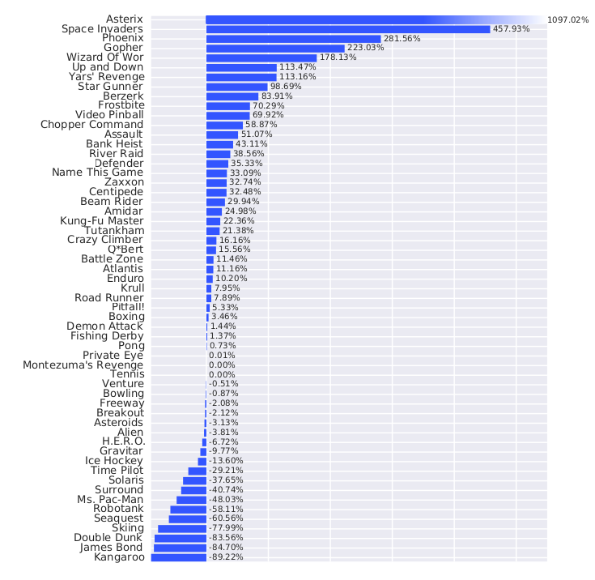
Categorical DQN
All RL methods based on the Bellman equations use the expectation operator to average returns and compute the values of states and actions:
\[ Q^\pi(s, a) = \mathbb{E}_{s, a \sim \pi}[R(s, a)] \]
The variance of the returns is not considered in the action selection scheme, and most methods actually try to reduce this variance as it impairs the convergence of neural networks. Decision theory states that only the mean should matter on the long-term, but one can imagine tasks where the variance is an important factor for the decision. Imagine you are in a game where you have two actions available: the first one brings returns of 10 and 20, with a probability of 0.5 each (to simplify), while the second one brings returns of -10 and +40 with probability 0.5 too. Both actions have the same Q-value of 15 (a return which is actually never experienced), so one can theoretically pick whatever action, both are optimal in the Bellman’s sense.
However, this is only true when playing long enough. If, after learning, one is only allowed one try on that game, it is obviously safer (but less fun) to choose the first action, as one wins at worse 10, while it is -10 with the second action. Knowing the distribution of the returns can allow to distinguish risky choices from safe ones more easily and adapt the behavior. Another advantage would be that by learning the distribution of the returns instead of just their mean, one actually gathers more information about the environment dynamics: it can only help the convergence of the algorithm towards the optimal policy.
@Bellemare2017 proposed to learn the value distribution (the probability distribution of the returns) through a modification of the Bellman equation. They show that learning the complete distribution of rewards instead of their mean leads to performance improvements on Atari games over modern variants of DQN.
Their proposed categorical DQN (also called C51) has an architecture based on DQN, but where the output layer predicts the distribution of the returns for each action \(a\) in state \(s\), instead of its mean \(Q^\pi(s, a)\). In practice, each action \(a\) is represented by \(N\) output neurons, who encode the support of the distribution of returns. If the returns take values between \(V_\text{min}\) and \(V_\text{max}\), one can represent their distribution \(\mathcal{Z}\) by taking \(N\) discrete “bins” (called atoms in the paper) in that range. Figure 7 shows how the distribution of returns between -10 and 10 can be represented using 21 atoms.
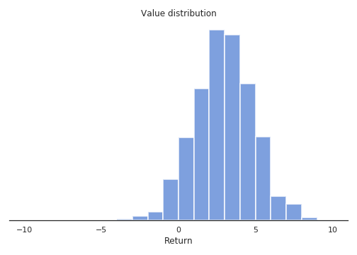
Of course, the main problem is to know in advance the range of returns \([V_\text{min}, V_\text{max}]\) (it depends largely on the choice of the discount rate \(\gamma\)), but you can infer it from training another algorithm such as DQN beforehand. @Dabney2017 got rid of this problem with quantile regression. In the paper, the authors found out experimentally that 51 is the most efficient number of atoms (hence the name C51).
Let’s note \(z_i\) these atoms with \(1 \leq i < N\). The atom probability that the return associated to a state-action pair \((s, a)\) lies within the bin associated to the atom \(z_i\) is noted \(p_i(s, a)\). These probabilities can be predicted by a neural network, typically by using a softmax function over outputs \(f_i(s, a; \theta)\):
\[ p_i(s, a; \theta) = \frac{\exp f_i(s, a; \theta)}{\sum_{j=1}^{N} \exp f_j(s, a; \theta)} \]
The distribution of the returns \(\mathcal{Z}\) is simply a sum over the atoms (represented by the Dirac distribution \(\delta_{z_i}\)):
\[ \mathcal{Z}_\theta(s, a) = \sum_{i=1}^{N} p_i(s, a; \theta) \, \delta_{z_i} \]
If these probabilities are correctly estimated, the Q-value is easy to compute as the mean of the distribution:
\[ Q_\theta(s, a) = \mathbb{E} [\mathcal{Z}_\theta(s, a)] = \sum_{i=1}^{N} p_i(s, a; \theta) \, z_i \]
These Q-values can then be used for action selection as in the regular DQN. The problem is now to learn the value distribution \(\mathcal{Z}_\theta\), i.e. to find a learning rule / loss function for the \(p_i(s, a; \theta)\). Let’s consider a single transition \((s, a, r, s')\) and select the greedy action \(a'\) in \(s'\) using the current policy \(\pi_\theta\). The value distribution \(\mathcal{Z}_\theta\) can be evaluated by applying recursively the Bellman operator \(\mathcal{T}\):
\[ \mathcal{T} \, \mathcal{Z}_\theta(s, a) = \mathcal{R}(s, a) + \gamma \, \mathcal{Z}_\theta(s', a') \]
where \(\mathcal{R}(s, a)\) is the distribution of immediate rewards after \((s, a)\). This use of the Bellman operator is the same as in Q-learning:
\[ \mathcal{T} \, \mathcal{Q}_\theta(s, a) = \mathbb{E}[r(s, a)] + \gamma \, \mathcal{Q}_\theta(s', a') \]
In Q-learning, one minimizes the difference (mse) between \(\mathcal{T} \, \mathcal{Q}_\theta(s, a)\) and \(\mathcal{Q}_\theta(s, a)\), which are expectations (so we only manipulate scalars). Here, we will minimize the statistical distance between the distributions \(\mathcal{T} \, \mathcal{Z}_\theta(s, a)\) and \(\mathcal{Z}_\theta(s, a)\) themselves, using for example the KL divergence, Wasserstein metric, total variation or whatnot.
The problem is mostly that the distributions \(\mathcal{T} \, \mathcal{Z}_\theta(s, a)\) and \(\mathcal{Z}_\theta(s, a)\) do not have the same support: for a particular atom \(z_i\), \(\mathcal{T} \, \mathcal{Z}_\theta(s, a)\) can have a non-zero probability \(p_i(s, a)\), while \(\mathcal{Z}_\theta(s, a)\) has a zero probability. Besides, the probabilities must sum to 1, so one cannot update the \(z_i\) independently from one another.
The proposed method consists of three steps:
- Computation of the Bellman update \(\mathcal{T} \, \mathcal{Z}_\theta(s, a)\). They simply compute translated values for each \(z_i\) according to:
\[ \mathcal{T} \, z_i = r + \gamma \, z_i \]
and clip the obtained value to \([V_\text{min}, V_\text{max}]\). The reward \(r\) translates the distribution of atoms, while the discount rate \(\gamma\) scales it. Figure 8 shows the distribution of \(\mathcal{T} \, \mathcal{Z}_\theta(s, a)\) compared to \(\mathcal{Z}_\theta(s, a)\). Note that the atoms of the two distributions are not aligned.
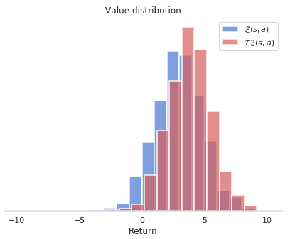
- Distribution of the probabilities of \(\mathcal{T} \, \mathcal{Z}_\theta(s, a)\) on the support of \(\mathcal{Z}_\theta(s, a)\). The projected atom \(\mathcal{T} \, z_i\) lie between two “real” atoms \(z_l\) and \(z_u\), with a non-integer index \(b\) (for example \(b = 3.4\), \(l = 3\) and \(u=4\)). The corresponding probability \(p_{b}(s', a'; \theta)\) of the next greedy action \((s', a')\) is “spread” to its neighbors through a local interpolation depending on the distances between \(b\), \(l\) and \(u\):
\[ \Delta p_{l}(s', a'; \theta) = p_{b}(s', a'; \theta) \, (b - u) \] \[ \Delta p_{u}(s', a'; \theta) = p_{b}(s', a'; \theta) \, (l - b) \]
Figure 9 shows how the projected update distribution \(\Phi \, \mathcal{T} \, \mathcal{Z}_\theta(s, a)\) now matches the support of \(\mathcal{Z}_\theta(s, a)\)
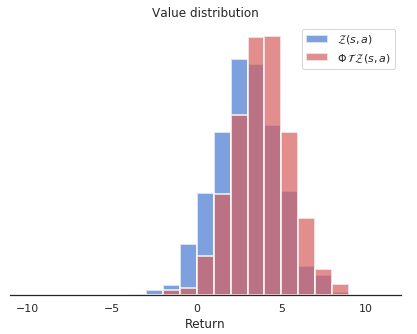
The projection of the Bellman update onto an atom \(z_i\) can be summarized by the following equation:
\[ (\Phi \, \mathcal{T} \, \mathcal{Z}_\theta(s, a))_i = \sum_{j=1}^N \big [1 - \frac{| [\mathcal{T}\, z_j]_{V_\text{min}}^{V_\text{max}} - z_i|}{\Delta z} \big ]_0^1 \, p_j (s', a'; \theta) \]
where \([\cdot]_a^b\) bounds its argument in \([a, b]\) and \(\Delta z\) is the step size between two atoms.
- Minimizing the statistical distance between \(\Phi \, \mathcal{T} \, \mathcal{Z}_\theta(s, a)\) and \(\mathcal{Z}_\theta(s, a)\). Now that the Bellman update has the same support as the value distribution, we can minimize the KL divergence between the two for a single transition:
\[ \mathcal{L}(\theta) = D_\text{KL} (\Phi \, \mathcal{T} \, \mathcal{Z}_{\theta'}(s, a) | \mathcal{Z}_\theta(s, a)) \]
using a target network \(\theta'\) for the target. It is to be noted that minimizing the KL divergence is the same as minimizing the cross-entropy between the two, as in classification tasks:
\[ \mathcal{L}(\theta) = - \sum_i (\Phi \, \mathcal{T} \, \mathcal{Z}_{\theta'}(s, a))_i \log p_i (s, a; \theta) \]
The projected Bellman update plays the role of the one-hot encoded target vector in classification (except that it is not one-hot encoded). DQN performs a regression on the Q-values (mse loss), while categorical DQN performs a classification (cross-entropy loss). Apart from the way the target is computed, categorical DQN is very similar to DQN: architecture, experience replay memory, target networks, etc.
Figure 10 illustrates how the predicted value distribution changes when playing Space invaders (also have a look at the Youtube video at https://www.youtube.com/watch?v=yFBwyPuO2Vg). C51 outperforms DQN on most Atari games, both in terms of the achieved performance and the sample complexity.
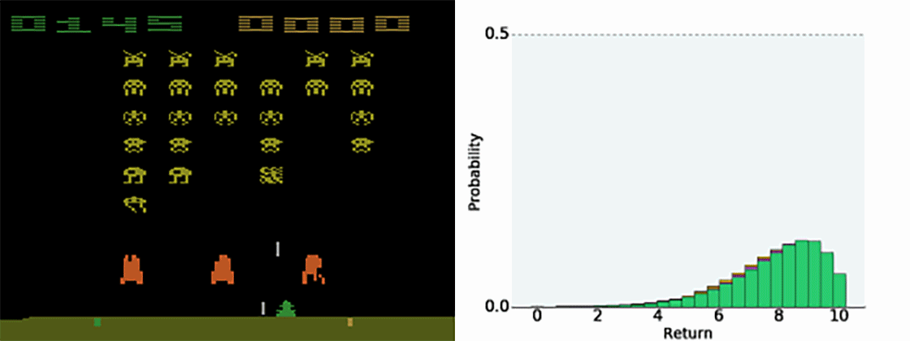
Additional resources:
Noisy DQN
DQN and its variants rely on \(\epsilon\)-greedy action selection over the Q-values to explore. The exploration parameter \(\epsilon\) is annealed during training to reach a final minimal value. It is preferred to softmax action selection, where \(\tau\) scales with the unknown Q-values. The problem is that it is a global exploration mechanism: well-learned states do not need as much exploration as poorly explored ones.
\(\epsilon\)-greedy and softmax add exploratory noise to the output of DQN: The Q-values predict a greedy action, but another action is taken. What about adding noise to the parameters (weights and biases) of the DQN, what would change the greedy action everytime? Controlling the level of noise inside the neural network indirectly controls the exploration level.
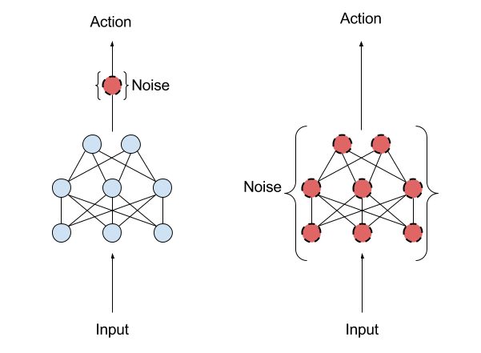
Parameter noise builds on the idea of Bayesian deep learning. Instead of learning a single value of the parameters:
\[y = \theta_1 \, x + \theta_0\]
we learn the distribution of the parameters, for example by assuming they come from a normal distribution:
\[\theta \sim \mathcal{N}(\mu_\theta, \sigma_\theta^2)\]
For each new input, we sample a value for the parameter:
\[\theta = \mu_\theta + \sigma_\theta \, \epsilon\]
with \(\epsilon \sim \mathcal{N}(0, 1)\) a random variable.
The prediction \(y\) will vary for the same input depending on the variances:
\[y = (\mu_{\theta_1} + \sigma_{\theta_1} \, \epsilon_1) \, x + \mu_{\theta_0} + \sigma_{\theta_0} \, \epsilon_0\]
The mean and variance of each parameter can be learned through backpropagation! As the random variables \(\epsilon_i \sim \mathcal{N}(0, 1)\) are not correlated with anything, the variances \(\sigma_\theta^2\) should decay to 0. The variances \(\sigma_\theta^2\) represent the uncertainty about the prediction \(y\).
Applied to DQN, this means that a state which has not been visited very often will have a high uncertainty: The predicted Q-values will change a lot between two evaluations and the greedy action might change: exploration. Conversely, a well-explored state will have a low uncertainty: The greedy action stays the same: exploitation.
Noisy DQN [@Fortunato2017] uses greedy action selection over noisy Q-values. The level of exploration is learned by the network on a per-state basis. No need for scheduling! Parameter noise improves the performance of \(\epsilon\)-greedy-based methods, including DQN, dueling DQN, A3C, DDPG (see later), etc.
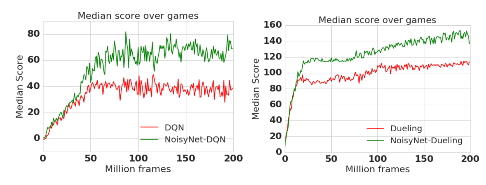
Rainbow DQN
As we have seen. the original formulation of DQN [@Mnih2015] has seen many improvements over the years.
- Double DQN [@vanHasselt2015] separates the selection of the greedy action in the next state from its evaluation in order to prevent over-estimation of Q-values:
\[\mathcal{L}(\theta) = \mathbb{E}_\mathcal{D} [(r + \gamma \, Q_{\theta'}(s´, \text{argmax}_{a'} Q_{\theta}(s', a')) - Q_\theta(s, a))^2]\]
- Prioritized Experience Replay [@Schaul2015] selects transitions from the ERM proportionally to their current TD error:
\[P(k) = \frac{(|\delta_k| + \epsilon)^\alpha}{\sum_k (|\delta_k| + \epsilon)^\alpha}\]
- Dueling DQN [@Wang2016] splits learning of Q-values into learning of advantages and state values:
\[Q_\theta(s, a) = V_\alpha(s) + A_\beta(s, a)\]
- Categorical DQN [@Bellemare2017] learns the distribution of returns instead of their expectation:
\[\mathcal{L}(\theta) = \mathbb{E}_{\mathcal{D}_s}[ - \mathbf{t}_k \, \log Z_\theta(s_k, a_k)]\]
- n-step returns [@Sutton2017] reduce the bias of the estimation by taking the next \(n\) rewards into account, at the cost of a slightly higher variance.
\[\mathcal{L}(\theta) = \mathbb{E}_\mathcal{D} [(\sum_{k=1}^n r_{t+k} + \gamma \max_a Q_\theta(s_{t+n+1}, a) - Q_\theta(s_t, a_t))^2\]
- Noisy DQN [@Fortunato2017] ensures exploration by adding noise to the parameters of the network instead of a softmax / \(\epsilon\)-greedy action selection over the Q-values.
All these improvements exceed the performance of vanilla DQN on most if not all Atari game. But which ones are the most important?
@Hessel2017 designed a Rainbow DQN integrating all these improvements. Not only does the combined network outperform all the DQN variants, but each of its components is important for its performance as shown by ablation studies (apart from double learning and duelling networks), see Figure 13.
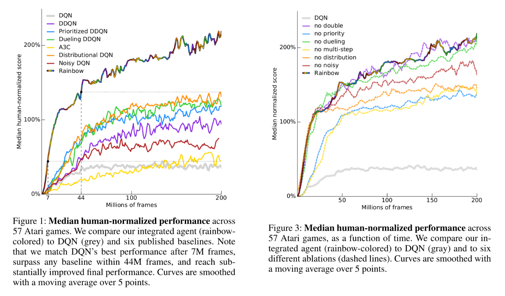
Deep Recurrent Q-learning (DRQN)
The Atari games used as a benchmark for value-based methods are partially observable MDPs (POMDP), i.e. a single frame does not contain enough information to predict what is going to happen next (e.g. the speed and direction of the ball on the screen is not known). In DQN, partial observability is solved by stacking four consecutive frames and using the resulting tensor as an input to the CNN. if this approach worked well for most Atari games, it has several limitations (as explained in https://medium.com/emergent-future/simple-reinforcement-learning-with-tensorflow-part-6-partial-observability-and-deep-recurrent-q-68463e9aeefc):
- It increases the size of the experience replay memory, as four video frames have to be stored for each transition.
- It solves only short-term dependencies (instantaneous speeds). If the partial observability has long-term dependencies (an object has been hidden a long time ago but now becomes useful), the input to the neural network will not have that information. This is the main explanation why the original DQN performed so poorly on games necessitating long-term planning like Montezuma’s revenge.
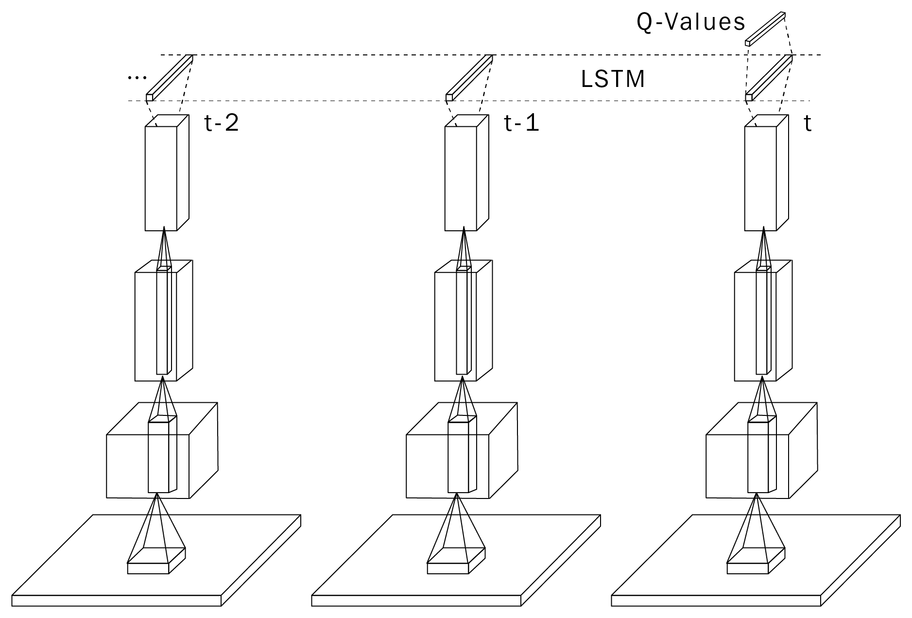
Building on previous ideas from the Schmidhuber’s group [@Bakker2001;@Wierstra2007], @Hausknecht2015 replaced one of the fully-connected layers of the DQN network by a LSTM layer while using single frames as inputs. The resulting deep recurrent q-learning (DRQN) network became able to solve POMDPs thanks to the learning abilities of LSTMs: the LSTM layer learn to remember which part of the sensory information will be useful to take decisions later.
However, LSTMs are not a magical solution either. They are trained using truncated BPTT, i.e. on a limited history of states. Long-term dependencies exceeding the truncation horizon cannot be learned. Additionally, all states in that horizon (i.e. all frames) have to be stored in the ERM to train the network, increasing drastically its size. Firthermore, the training time (but not inference time) is orders of magnitude slower than with a comparable feedforward network. Despite these limitations, DRQN is a much more elegant solution to the partial observability problem, letting the network decide which horizon it needs to solve long-term dependencies.
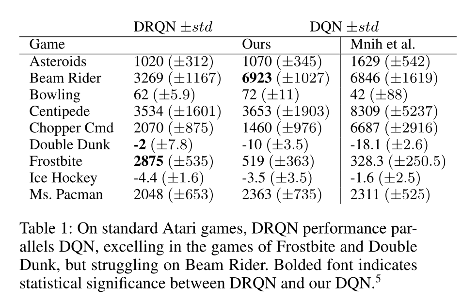